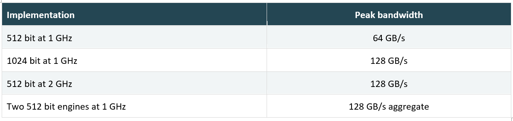
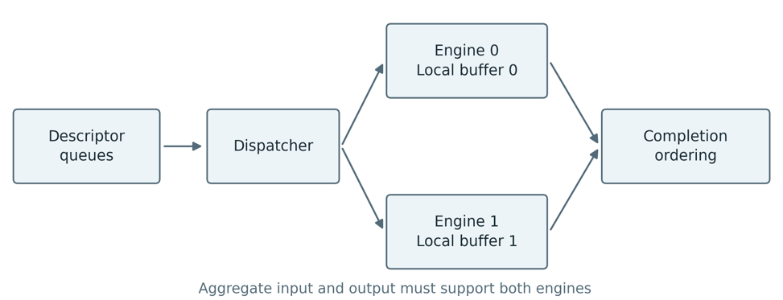
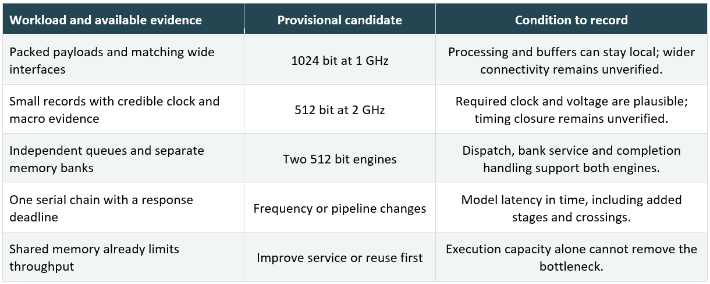

Originally published on LinkedIn. View original article ↗

A 512-bit data path at 1 GHz must deliver twice its useful throughput. Should we widen it to 1024 bits, raise the clock to 2 GHz, or use two engines?
I would first check where bandwidth is lost. An engine waiting for memory needs a different solution from one moving partially filled words. Consider the internal payload path of a DMA block between a PCIe subsystem and the SoC fabric. The PCIe and memory paths must support the target. These operating points are design assumptions, not product measurements or PCIe link rates.

These one direction rates assume one accepted word per cycle and enough processing capacity. GB means one billion bytes. If the original sustains 48 GB/s, the target is 96 GB/s. A requirement for 128 GB/s of useful payload leaves no room for overhead in any nominal 128 GB/s option.
Useful throughput = (W ÷ 8) × f × U × E
W is width in bits, f is frequency, U is the fraction of cycles accepting a transfer, and E is useful bytes divided by available byte positions in accepted transfers. Include stalls in elapsed time. For example, 128 GB/s × 0.85 × 0.90 gives 97.92 GB/s, only 2% above our target. For two engines, calculate each rate and add them.
When width helps and when it does not
A wider engine suits long payloads when processing lanes, buffers and fabric can all move more data. An unchanged 512 bit port at 1 GHz still limits that path to 64 GB/s. A width converter combines words; it does not create bandwidth.
Suppose each data item contains 48 bytes and the engine accepts one data item per beat, without packing. At 1 GHz, both 512 bit and 1024 bit designs deliver 48 GB/s. A 512 bit engine at 2 GHz can reach 96 GB/s. Two engines can also reach 96 GB/s if data items are independent and their supply and drain keep up. Widening helps only after adding support to pack and process multiple data items per beat.
Inspect size and alignment histograms before widening. Independent lanes, barrel shifters and reduction trees have different scaling costs. Control signals on wider data paths may need more fanout buffering. A FIFO with 64 entries stores 4 KiB at 512 bits and 8 KiB at 1024 bits, before metadata. Check macro-organization and routing; area and delay need not scale directly with width.
What changes at 2 GHz
The period falls from 1 ns to 0.5 ns. Clock to Q, setup, uncertainty and skew allowances leave less time for logic and wires. With an illustrative 100 ps allowance, the available budget falls from 900 ps to 400 ps. A 700 ps logic and wire path passes the first budget and fails the second; actual corners and constraints determine the real numbers.
Pipelining can shorten a logic path, but data, tags, byte enables and errors must remain aligned. Feedback may still limit the initiation interval. Check how often new work enters, not just maximum frequency. Memory macros may need banking or a different implementation to support the higher access rate.
The fabric must supply and drain the faster engine. Related clocks need correct generated clock constraints and a compatible transfer scheme. Asynchronous clocks need a suitable crossing mechanism, such as an asynchronous FIFO. A frequency ratio of two does not establish a safe timing relationship.
A faster local block cannot compensate for an unchanged 512 bit fabric running at 1 GHz. Check the rate at every conversion boundary, including memory access and completion handling. If the engine is regularly blocked at its output, increasing its clock can leave the system throughput almost unchanged.
Eight pipeline stages at 1 GHz and sixteen at 2 GHz both give 8 ns of nominal beat latency. Throughput may double without making one beat finish sooner. Measure request acceptance to completion, including queueing and crossings. For small DMA requests, descriptor handling and notification can dominate the payload processing time.
What two engines really require
Two engines retain the local width and clock target, but add control state, dispatch and possibly result ordering. Independent descriptors or flows are natural candidates. A single dependency chain cannot keep both engines busy without changing the algorithm.

Keeping each ordered flow on one engine simplifies retirement. Splitting it across engines can require sequence tracking and a reorder buffer. A slow request may hold later results at the output. Monitor reorder occupancy and oldest completion wait time, not only engine utilization.
Both engines need enough aggregate input and output bandwidth. Shared SRAM ports, memory banks and merge logic can become bottlenecks. If one engine sustains 48 GB/s and two sustain 80 GB/s, scaling efficiency is 80 ÷ 96, or 83.3%. The pair still misses the target. Before expanding further, check whether dispatch, buffers and memory can scale with compute.
Inspect the two engine utilization counters separately. A high average can hide unequal work distribution, while a low average may come from an empty queue rather than slow execution. Software must expose enough independent requests. Increasing queue depth helps only until another shared resource or a dependency becomes the limiting factor.
Compare energy per useful operation
Dynamic power ≈ α × C × V² × f
α is switching activity, C is switched capacitance, V is voltage and f is frequency. Doubling frequency doubles this component if everything else stays constant. If voltage also rises from an assumed 0.75 V to 0.90 V, the factor is 2 × (0.90 ÷ 0.75)² = 2.88. This is a conditional example, not a process requirement. Added registers, sizing and routing change C; leakage is separate.
Widening or replicating can also roughly double switched datapath capacitance under a simple lane replication model. Neither automatically saves energy per byte. Savings must come from lower voltage, better utilization, shared control or reduced data movement.
Separate clock and data power. A wider registered bus adds clock sinks, higher frequency increases clock switching, and another engine adds clocked state. Constant data does not stop the clock tree. Gating an idle region reduces dynamic power but does not remove leakage.
Energy per useful byte = average power ÷ useful bytes per second
For an independent illustrative power comparison, 14.4 W at 96 GB/s is 150 pJ per byte. A lower 12.8 W at 80 GB/s is 160 pJ per byte and misses the target. For compute, use completed operations instead of bytes. Use the same measurement boundary, including dispatch, buffering and crossings.
For bursty traffic, integrate energy over the same arrival trace, including idle time and wakeup overhead. Gated engines may suit variable demand, while shared control may favour width. A faster compact engine remains a candidate if its voltage and timing costs are acceptable.
Compare the candidates at the required service rate as well as at maximum load. Otherwise one may finish early and sit idle while another runs continuously, making average power alone misleading. State whether the power boundary includes memory and fabric. Keep this boundary identical when calculating energy per useful operation.
Replication includes more than the data lanes. Account for duplicated state, local buffers and any shared dispatcher or reorder logic. Widening may share control but increase register and routing load. Frequency may preserve logical width yet need extra pipeline stages or larger cells. These implementation costs determine whether the simple switching model remains useful.
Check wires and memory before choosing
If wire delay dominates, start with placement. A wide bus through congestion can be difficult to route, while a faster clock gives long wires less time. Two local engines help only when buffers and data are also local. Central dispatch or merging can recreate the same problem.
Ask for cell versus net delay, fanout, buffer count, congestion and clock insertion results. Test pipelining for logic dominated paths and placement, banking or registered boundaries for long routes. Compare routed timing and area, not synthesis alone.
Convert memory demand into useful payload units. One DRAM read and one DRAM write per payload byte require at least 192 GB/s of memory data traffic for 96 GB/s of useful throughput. Metadata and inefficient accesses add demand.
A 96 GB/s read stream with 200 ns average latency needs about 19200 bytes in flight. Keeping 256 useful bytes per request, the average is 75 requests, requiring at least 75 request slots in this simplified model. Allow for latency variation and implementation limits. This is not a FIFO depth formula.
Replay identical sizes, alignments, dependencies and bursts. Record useful bytes, accepted transfers, source starvation, downstream stalls and queue occupancy. Measure median and tail completion latency across queue depths. Compare physical trials at common technology and corner assumptions, including clock power, data power, leakage and routing demand. Verify ordering, back pressure and crossings before selection.
For a realistic workload, record both the average rate and intervals where queues build up. A design that just meets average throughput may still miss a completion deadline during bursts. This is why the 97.92 GB/s example needs a headroom discussion even though it exceeds the 96 GB/s target.
For each physical trial, retain the voltage, clock constraints, memory configuration and activity trace with the report. Include buffers inserted for timing and the clock network in the area and power comparison. The useful result is a reproducible operating point that meets the requirement, not simply the highest frequency reported by synthesis.
A practical guide for early SoC architecture
Without placement or routing results, select a provisional architecture. Record why it matches the workload and which physical assumptions remain open. Do not treat an unknown clock limit, route capacity or power estimate as a passed check.
First establish useful throughput, completion latency and source and destination limits. For 96 GB/s from a nominal 128 GB/s design, combined transfer utilization and useful byte occupancy must reach 75%. Model packing, stalls, dependencies and arbitration. A narrow interface limited to 64 GB/s rules out a sustained 96 GB/s path regardless of the engine choice.

Use comparable blocks, IP limits and memory models, recording process, voltage and corner differences. Prefer supported assumptions and retain an alternative. If a critical unknown prevents selection, leave the decision open.
If your datapath needed twice the throughput, would you choose a wider bus, a higher clock frequency or two parallel engines? Which constraint would drive your decision: power, timing closure, routing or memory bandwidth? Share your experience in the comments. I would be interested to hear what worked in practice and what changed your initial choice.